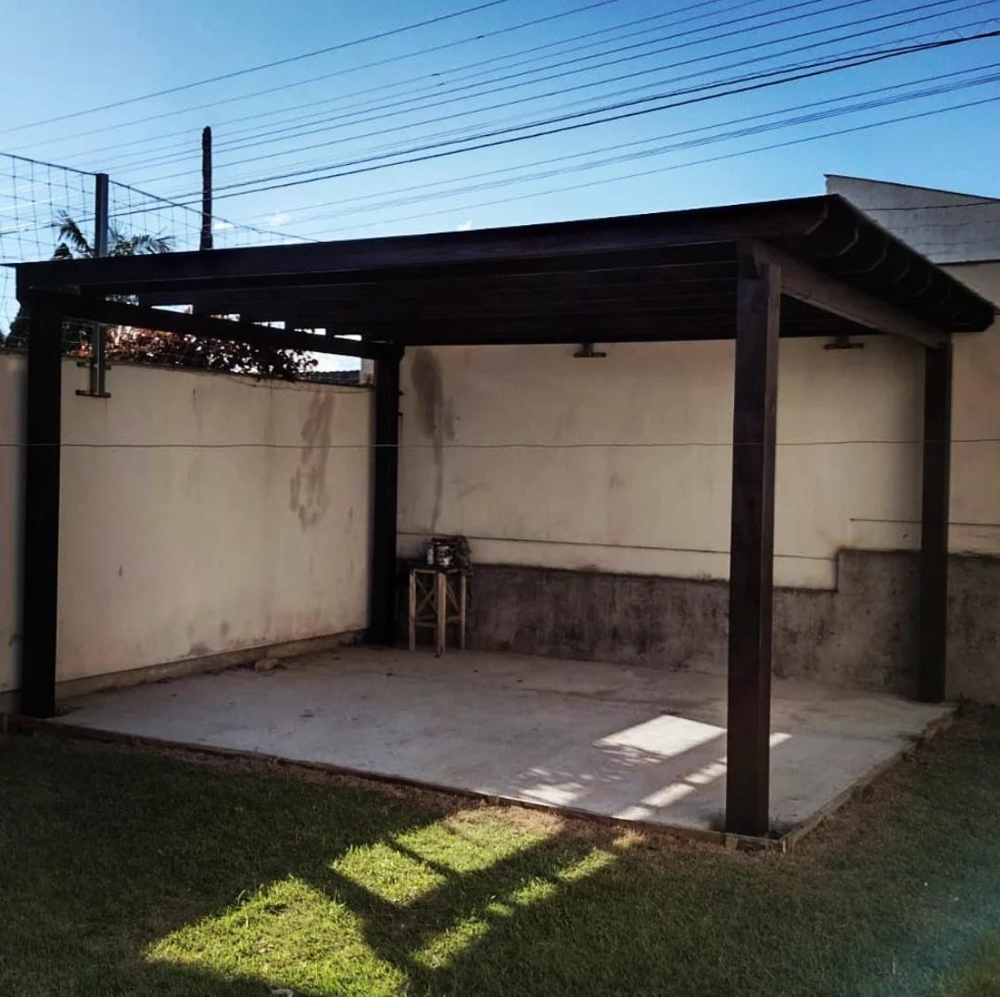
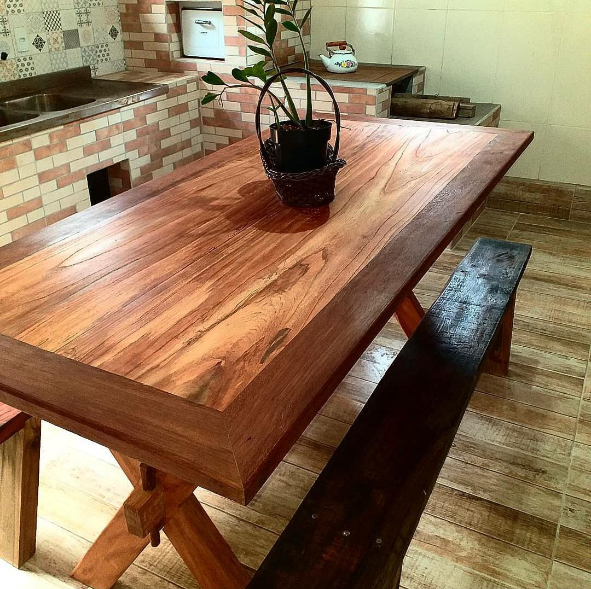
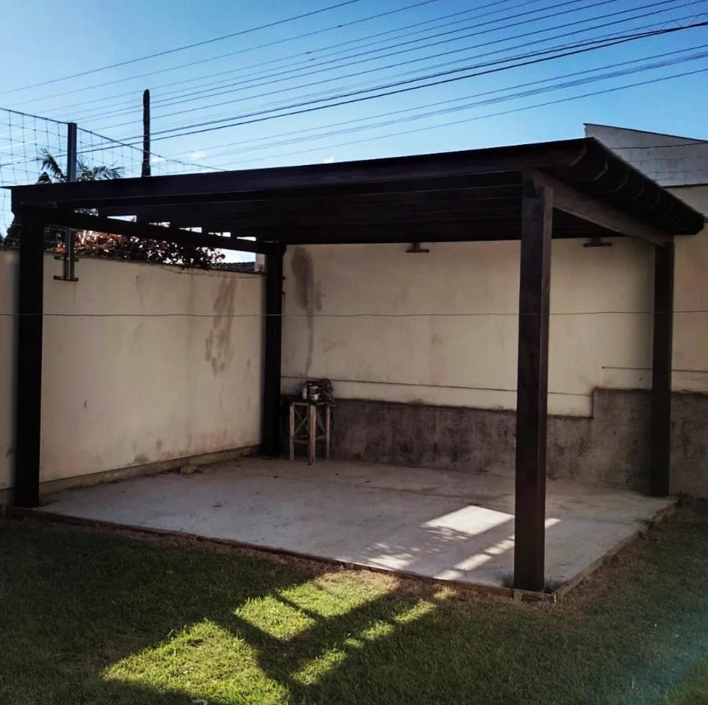
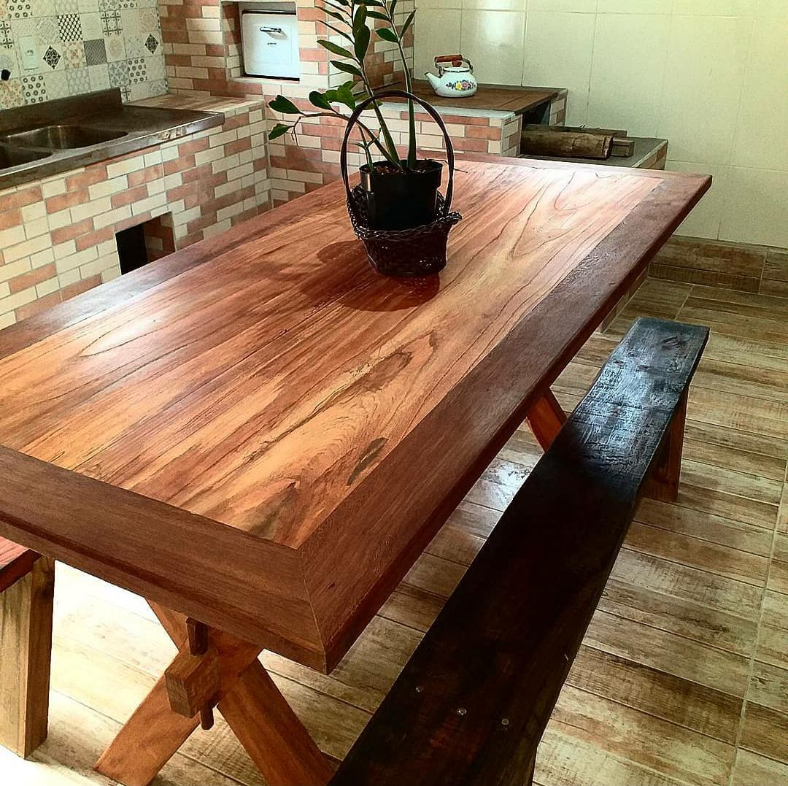

Sobre a Fundo da Grota
A Fundo da Grota atua no mercado desde 2021, com a fabricação de peças e objetos em madeiras, principlamente peças rústicas e exclusivas. Agregando arte e beleza, deixando um ambiente rustico com aspecto simples, mas agregando criatividade, inovação e rusticidade.